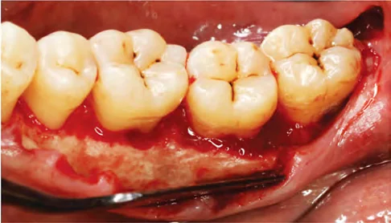

نسخه استخراجشده؛ ترجمه یا تأیید علمی انجام نشده است. وضعیت: captured
دسترسی برای دبریدمان کامل سطح ریشه — مهمترین هدف در بیشتر موارد.
کاهش یا حذف پاکت تا عمقی که بیمار بتواند خودش تمیز نگه دارد.
بازسازی بافتهای از دست رفته در نقصهای مناسب.
اصلاح نقصهای موکوژنژیوال.
زیبایی و آمادهسازی برای درمان ترمیمی و پروتز.
🔑 توجه کن که هدف نخست، دسترسی است. جراحی پریودنتال در بیشتر موارد یک عمل «تمیزکاری با دید مستقیم» است، نه یک عمل بازسازی.
| یافته | توضیح |
|---|---|
| پاکت باقیمانده ۵ تا ۶ میلیمتر یا بیشتر با BOP | پس از فاز اول و ارزیابی مجدد |
| نقص استخوانی که به اصلاح شکل یا بازسازی نیاز دارد | بهویژه نقص عمودی سهدیواره |
| درگیری فورکیشن درجه II یا بیشتر | دسترسی ابزار محدود است |
| افزایش طول تاج | برای ترمیم یا زیبایی |
| نقص موکوژنژیوال | تحلیل پیشرونده، کمبود لثه کراتینیزه علامتدار |
⚠️ هیچیک از این اندیکاسیونها پیش از تکمیل فاز اول و ارزیابی مجدد معتبر نیست.
سکته قلبی اخیر — تعویق حداقل ۶ ماه.
بیماری سیستمیک کنترلنشده — دیابت کنترلنشده، فشار خون کنترلنشده، نارسایی کلیه یا کبد پیشرفته.
اختلال انعقادی شدید کنترلنشده.
سابقه بیسفسفونات وریدی یا سایر داروهای ضدرزورپتیو با خطر بالای MRONJ.
رادیوتراپی سر و گردن با دوز بالا در ناحیه.
نقص ایمنی شدید یا شیمیدرمانی فعال.
| مورد | اقدام |
|---|---|
| 🔴 کنترل پلاک ناکافی | تمدید فاز اول و آموزش — مهمترین کنترااندیکاسیون نسبی |
| سیگار | مشاوره ترک؛ نتیجه جراحی بهطور معناداری بدتر است |
| انتظارات غیرواقعبینانه | گفتوگو و تنظیم انتظار پیش از عمل |
| عدم همکاری در جلسات | بدون پایش، دستاورد جراحی از دست میرود |
فاز اول کامل شده و ارزیابی مجدد انجام شده است.
التهاب کنترل شده و شاخص پلاک قابل قبول است.
شرححال پزشکی کامل و در صورت نیاز، مشورت با پزشک معالج.
رضایت آگاهانه: گزینهها، خطرها، هزینه، دوره نقاهت، و پیامد عدم درمان.
پس از باز کردن فلپ و برداشتن بافت بیمار، فضایی میان سطح ریشه و فلپ ایجاد میشود. چهار نوع سلول برای اشغال این فضا با هم رقابت میکنند:

| منشأ سلول | سرعت مهاجرت | نتیجه اگر برنده شود |
|---|---|---|
| اپیتلیوم | 🔴 سریعترین | اپیتلیوم اتصالی بلند — ترمیم |
| بافت همبند لثه | سریع | چسبندگی نامناسب یا تحلیل ریشه |
| استخوان | کند | خطر آنکیلوز و تحلیل ریشه |
| لیگامان پریودنتال | 🔴 کندترین | 🟢 سمان جدید، لیگامان جدید، استخوان جدید — بازسازی واقعی |
🔑 مهمترین مفهوم این درس: تنها سلولهای لیگامان پریودنتال میتوانند چسبندگی جدید واقعی بسازند — اما آنها کندتریناند. اپیتلیوم سریعترین است و معمولاً برنده میشود.
📌 پیامد مستقیم: نتیجه معمول جراحی فلپ، اپیتلیوم اتصالی بلند است — یعنی ترمیم نه بازسازی. همین واقعیت است که ایده بازسازی هدایتشده بافت (GTR) را ساخت: قرار دادن ممبران برای مسدود کردن اپیتلیوم و بافت همبند لثه، تا سلولهای کند PDL فرصت رسیدن پیدا کنند.
ترمیم اولیه (Primary intention): لبههای زخم به هم نزدیک و بخیهشده ⬅️ بهبود سریعتر، درد کمتر، اسکار کمتر. هدف در فلپ.
ترمیم ثانویه (Secondary intention): سطح زخم باز میماند و از پایه پر میشود ⬅️ کندتر و دردناکتر. مثال: ژنژیوکتومی.
⚠️ اشتباه رایج ۱: هدف نخست جراحی، دسترسی است.
⚠️ اشتباه رایج ۲:کنترل پلاک ناکافی، مهمترین کنترااندیکاسیون نسبی است.
⚠️ اشتباه رایج ۳: فقط سلولهای PDL بازسازی میسازند، اما کندتریناند.
نوع سؤال: ساخت کلمه · 6 خانه
حروف منبع: ن · و · ه · ا · ی · ث